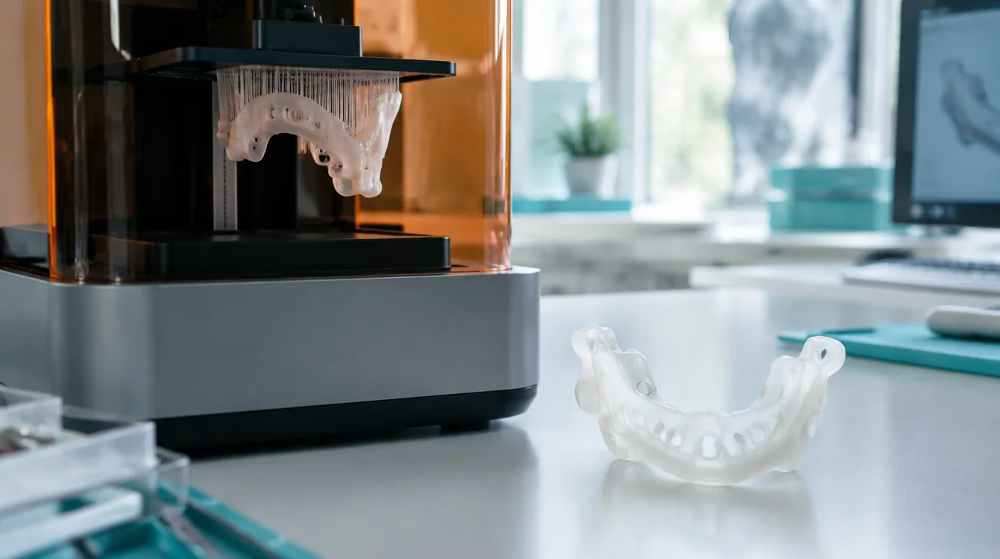
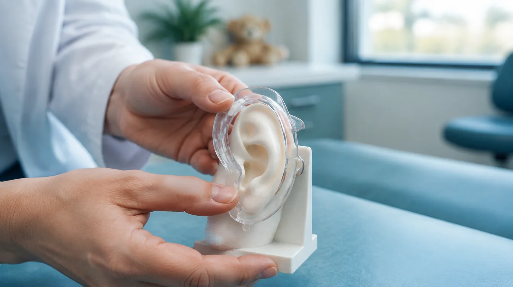
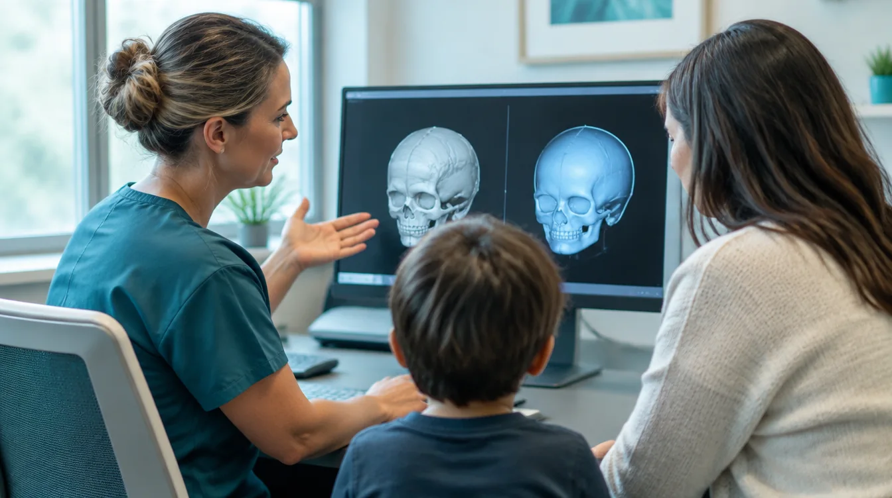

STEP 01
Capture a 3D scan
A quick, contact-free scan records the patient's anatomy for a precise starting model.
Reshape, not reconstruct.
A 30-second scan becomes a series of biocompatible aligners: 3D-printed, custom-fit and worn, and gently corrective.
Each guide is biocompatible. Optical clarity lets clinicians track tissue progress through the device without removal.
Each guide is custom-fit from a 3D print, sometimes in one piece and sometimes in two, to fit a wide range of ages and anatomy sizes. FaceShift primarily acts on cartilage and may also influence bone remodeling.
A quick scan starts a clinician-guided process. Each guide is custom-fit from a 3D print to match a patient's anatomy and treatment goals.
A quick, contact-free scan records the patient's anatomy for a precise starting model.
The care team shapes a guide around the patient's anatomy, age, and treatment goals.

A medical-grade guide is custom-made from the scan, in one piece or two as the fit requires.

Clinicians check placement and help families follow a comfortable, consistent wear plan.
The guide is custom-fit and worn as directed, with a clear design that supports clinical checks.

Follow-up tracks progress and informs each next guide as anatomy and treatment needs change.
FaceShift brings 3D scanning, patient-specific planning, and clinical follow-up together. Each guide is made for the patient's anatomy and treatment goals, with a design that supports practical fitting and care.
Initially developed for ear differences like lop and prominent ear, FaceShift extends to the nose, septum, jaws, and other craniofacial differences.
FaceShift primarily acts on cartilage and may also influence bone remodeling over time. Treatment planning is clinician-guided and tailored to the patient's anatomy and goals.
Each device is custom-fit from a 3D scan and printed in one or two pieces depending on the anatomy, allowing treatment across a wide range of ages and anatomy sizes.
FaceShift is co-developed with the team at UCSF Benioff Children's Hospital, led by Dr. Alexander Lin, a craniofacial surgeon and 3D-printing researcher whose practice has shaped every part of the platform.
UCSF Plastic Surgery, leading translational work where new tools cross from prototype into the operating room.
UCSF Benioff Children's Hospitals, a multidisciplinary clinic for cleft, ear, jaw, and skull conditions.
UCSF Health, the source of the print-and-test infrastructure FaceShift runs on.
For families and referring clinicians: the FaceShift team can be reached through UCSF Benioff Children's Hospital, Oakland.
Get in touchRecent advances in non-surgical molding, combined with accessible 3D printing of biocompatible materials, have made a custom-guided approach more practical.

A single right-ear example is shown. The guide is custom-fit and worn day and night, applying gentle directional pressure to reshape cartilage within the pliability window.
The guide is 3D-printed from a patient scan, with its shape and configuration planned around anatomy, age, and treatment goals.
Care teams fit and review each guide, with follow-up informing how treatment adapts over time.
Early patient-specific, 3D-printed guide prototypes.
Development and clinical feedback at UCSF Benioff Children's Hospitals.
Exploring applications across additional craniofacial differences.
Future clinical and regulatory milestones will guide next steps.
Traditional surgeries for craniofacial differences have been costly, invasive, and often delayed until anatomy reaches near-adult size, placing unnecessary burden on children and their families. FaceShift brings clinical insight, 3D scanning, and patient-specific printing together to support more personalized care.
FaceShift's mission is to make custom craniofacial care more adaptable to the patient, bringing clinicians, digital modeling, and 3D printing together around each person's anatomy.
FaceShift · Clinician-guided, patient-specific care